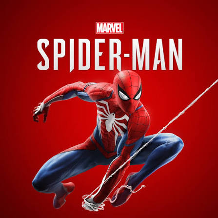

Spider-man to superbohater ze świata Marvela, którego prawdziwe imię to Peter Parker.
Jest młodym mieszkańcem Nowego Jorku, Który zyskał niezwykłe moce po ukąszeniu przez
radioaktywnego pajaka. Postanowił wykorzystać swoje zdolności do pomagania innym i walki z przestępcami.
Na co dzień stara się łączyć życie zwykłego nastolatka z obowiązkami superbohater
Z wielką mocą wiąże się wielka odpowiedzialnośćPP
Pierwsy komiks Spider-mana ukazał się w 1962r.
jad pająka zawiera związki H2O i białka